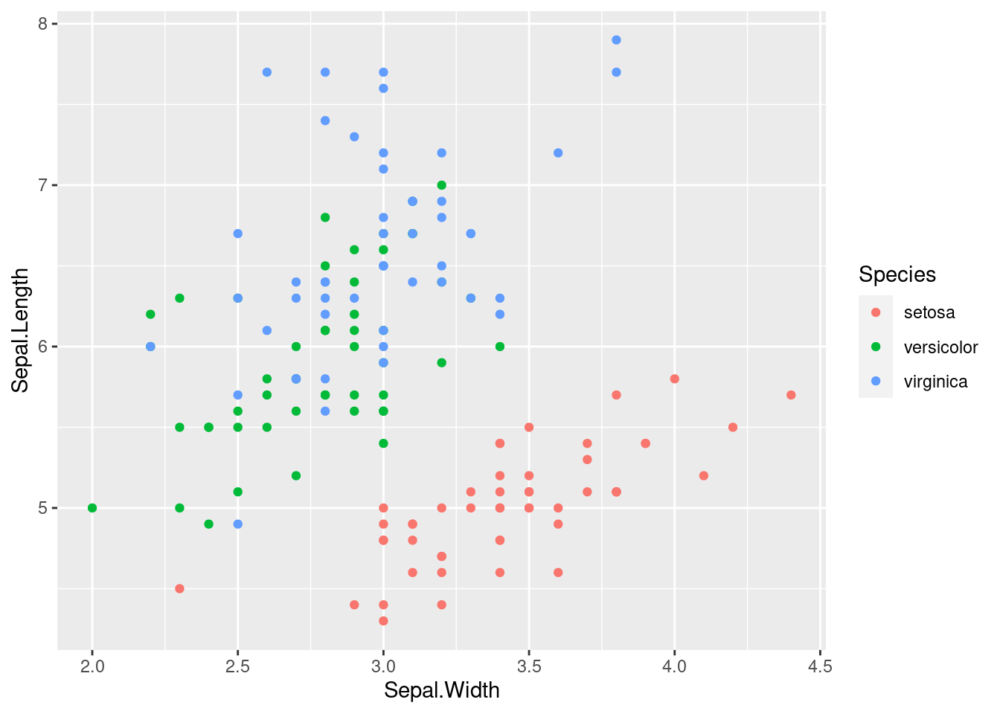

Capítulo 6 Anexo: Visualización con Ggplot

6.1 Ggplot2
Comparando con los gráficos base de R, ggplot2:
- Tiene una gramática más compleja para gráficos simples
- Tiene una gramática menos compleja para gráficos complejos o muy personalizados
- Los datos siempre deben ser un data.frame.
- Usa un sistema diferente para añadir elementos al gráfico.
Histograma con los gráficos base:
data(iris)
hist(iris$Sepal.Length)Histograma con ggplot2:
library(ggplot2)
ggplot(iris, aes(x = Sepal.Length)) +
geom_histogram(color = 'white', bins=8)
Ahora vamos a ver un gráfico con colores y varias series de datos.
Con los gráficos base:
plot(Sepal.Length ~ Sepal.Width,
col = factor(Species),
data = iris)Con ggplot2:
ggplot(iris,
aes(x=Sepal.Width ,
y= Sepal.Length,
color=Species))+
geom_point()
6.1.1 Objetos aesteticos
En ggplot2, aestético significa “algo que puedes ver.”
Algunos ejemplos son:
- Posición (por ejemplo, los ejes x e y)
- Color (color “externo”)
- Fill (color de relleno)
- Shape (forma de puntos)
- Linetype (tipo de linea)
- Size (tamaño)
- Alpha (para la transparencia: los valores más altos tendrían formas opacas y los más bajos, casi transparentes).
Hay que advertir que no todas las estéticas tienen la misma potencia en un gráfico. El ojo humano percibe fácilmente longitudes distintas. Pero tiene problemas para comparar áreas (que es lo que regula la estética size) o intensidades de color. Se recomienda usar las estéticas más potentes para representar las variables más importantes.
Cada tipo de objeto geométrico (geom) solo acepta un subconjunto de todos los aestéticos. Puedes consultar la pagina de ayuda de geom() para ver que aestéticos acepta. El mapeo aestético se hace con la función aes().
6.1.2 Objetos geométricos o capas
Los objetos geométricos son las formas que puede tomar un gráfico. Algunos ejemplos son:
- Barras (geom_bar(), para las variables univariados discretos o nominales)
- Histogramas (geom_hist() para gráficas univariadas continuas)
- Puntos (geom_point() para scatter plots, gráficos de puntos, etc…)
- Lineas (geom_line() para series temporales, lineas de tendencia, etc…)
- Cajas (geom_boxplot() para gráficos de cajas)
- Un gráfico debe tener al menos un geom, pero no hay limite. Puedes añadir más geom usando el signo +.
Si queremos conocer la lista de objetos geométricos podemos ejecutar el siguiente código:
help.search("geom_", package = "ggplot2")Una vez añadida una capa al gráfico a este pueden agregarse nuevas capas
ggplot(iris, aes(x = Petal.Length, y = Petal.Width, colour = Species)) +
geom_point()
ggplot(iris, aes(x = Petal.Length, y = Petal.Width, colour = Species)) +
geom_point()+
geom_smooth()
6.1.3 Facetas
Muchos de los gráficos que pueden generarse con los elementos anteriores pueden reproducirse usando los gráficos tradicionales de R, pero no los que usan facetas, que pueden permitirnos explorar las variables de diferente forma, por ejemplo:
ggplot(iris, aes(x = Petal.Length, y = Petal.Width)) +
geom_point() + geom_smooth() +
facet_grid(~ Species)
crea tres gráficos dispuestos horizontalmente que comparan la relación entre la anchura y la longitud del pétalo de las tres especies de iris. Una característica de estos gráficos, que es crítica para poder hacer comparaciones adecuadas, es que comparten ejes.